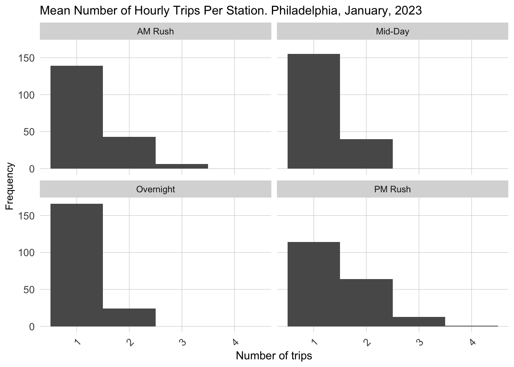
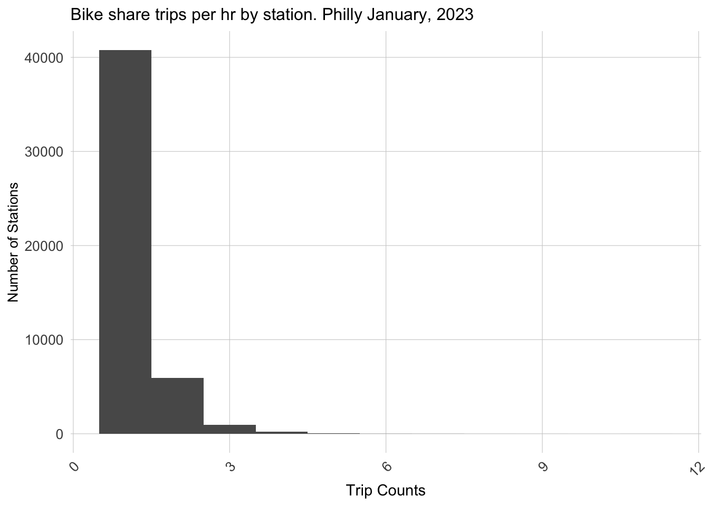
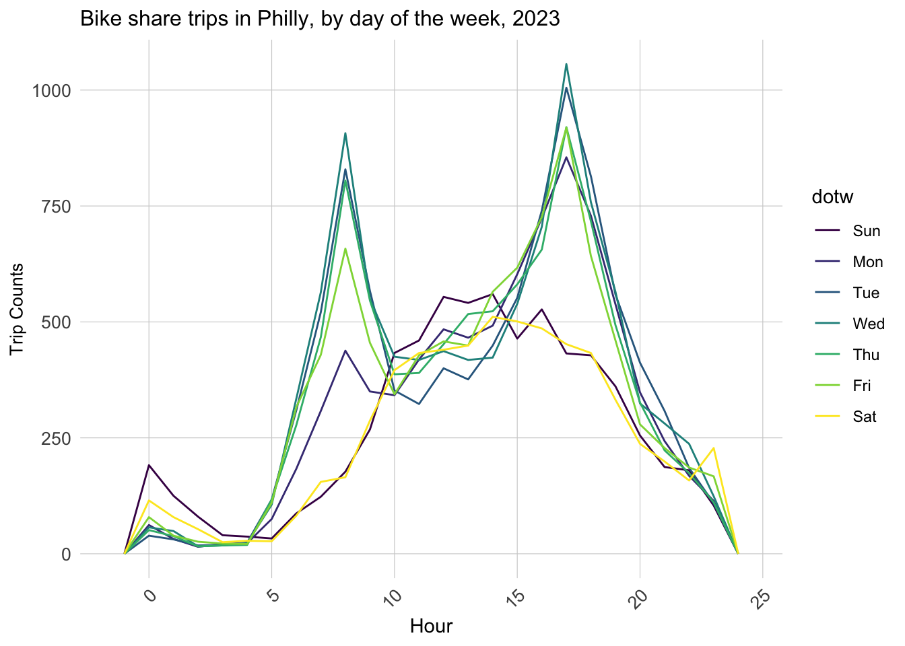
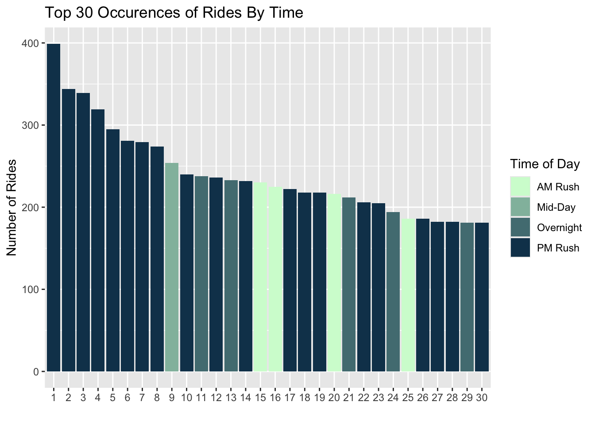
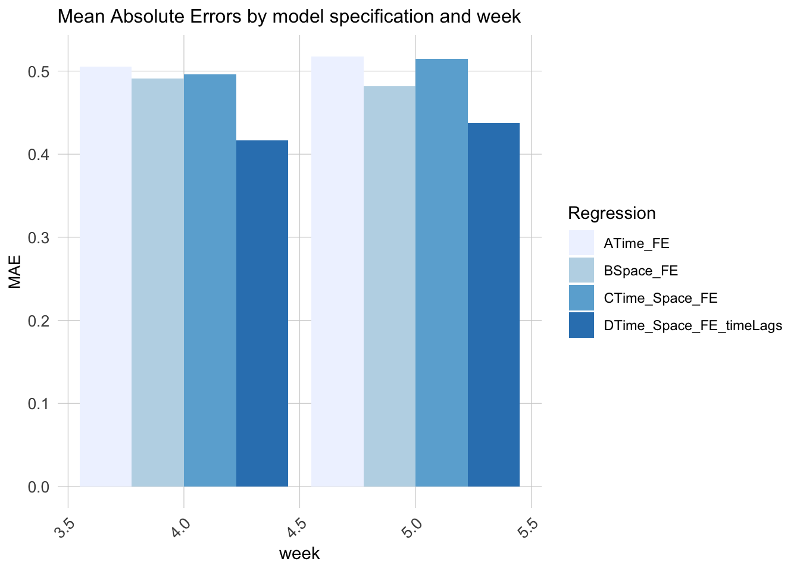
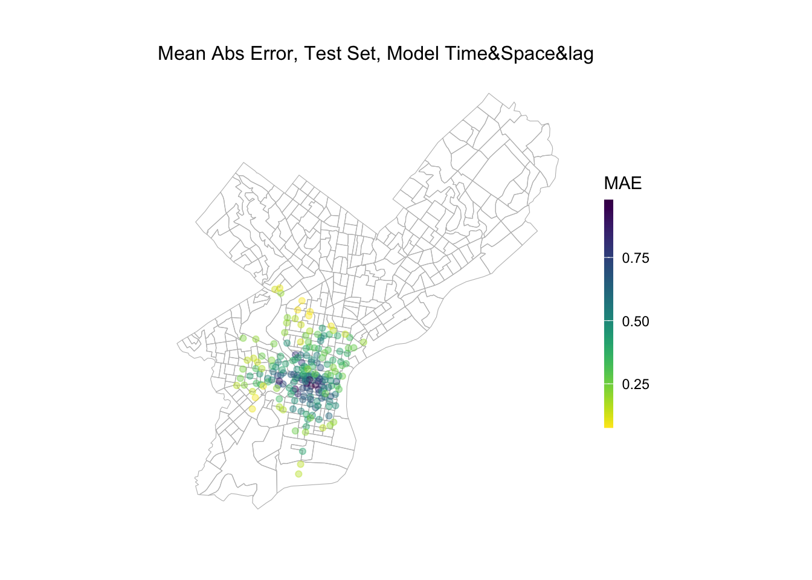

Bikeshare programs is becoming an integral part of urban transportation system. Indego Bike is one of the earliest bicycle sharing system in Philadelphia. Bicycling has become more prevalent and important in Philadelphia because of the city’s smaller center city size and more bike-friendly streets. However, Bikesharing is also affected by how to balance the number of bikes at each station, which can be framed as ‘re-balancing’. This issue arises from the spatial and temporal variations in user demand. If a station has a large number of bikes in use making parking impossible or if there are no bikes available at a certain time due to the time of day this can lead to inefficiencies in sharing bikes. Therefore, the goal of this report is to rapidly predict the demand for bikes across various stations in Philadelphia. We will perform analysis on the historical data on bike usage at different space, time and weather conditions. The forecast allows the Indego Bike to proactively address imbalances, strategically re-positioning bikes in anticipation of peak usage time or special events.
Code
library(tidyverse)library(sf)library(lubridate)library(tigris)library(tidycensus)library(viridis)library(riem)library(gridExtra)library(knitr)library(kableExtra)library(RSocrata)library(dplyr)library(spdep)library(caret)library(ckanr)library(FNN)library(grid)library(gridExtra)library(ggcorrplot) # plot correlation plotlibrary(corrr) # another way to plot correlation plotlibrary(kableExtra)library(jtools) # for regression model plotslibrary(ggstance) # to support jtools plotslibrary(ggpubr) # plotting R^2 value on ggplot point scatterlibrary(broom.mixed) # needed for effects plotslibrary(vtable)library(gganimate)library(gifski)library(purrr)source("https://raw.githubusercontent.com/urbanSpatial/Public-Policy-Analytics-Landing/master/functions.r")devtools::install_github('thomasp85/gganimate')plotTheme <-theme(plot.title =element_text(size=12),plot.subtitle =element_text(size=8),plot.caption =element_text(size =6),axis.text.x =element_text(size =10, angle =45, hjust =1),axis.text.y =element_text(size =10),axis.title.y =element_text(size =10),# Set the entire chart region to blankpanel.background=element_blank(),plot.background=element_blank(),#panel.border=element_rect(colour="#F0F0F0"),# Format the gridpanel.grid.major=element_line(colour="#D0D0D0",size=.2),axis.ticks=element_blank())
Warning: The `size` argument of `element_line()` is deprecated as of ggplot2 3.4.0.
ℹ Please use the `linewidth` argument instead.
The data of Indego shared bike usage is from the open data in Indego Website. the data include the first quarter usage information in 2023. And the dataset includes variables like time, station, geometry of start and end station of each trip.
Transit stop data comes from dvrpc. Concerning the concept of last 5 minutes walking distance, it’s reasonable that the shared bike serves as the connection between the destination and transit station. The distance to the closest stop could effect the using frequency of shared bike station. Therefore, we use the bus stop and rail stop data in Philadelphia as the raw data, and then use KNN algorithm to calculate the distance of the shared bike station to the nearest transit stop.
The weather data comes from the API provided by package ‘riem’. Due to the using of bike is highly influenced by the weather condition, like rainy or windy situation will obstacle the use of bike. Therefore, it’s necessary to take weather into consideration. I selected the weather data from the time range of the shared bike I select and merge them as a combined dataset.
From the plot of weather from 1/1/2023 to 2/4/2023, we can find that the degree of percipitation is relatively low and stable. When we focus on the wind speed and temperature, we can find that the wind speed have slightly increase when it comes to the end of January, while the temperature was gradually turning down.
Also, the usage of shared bike turns out an apparent difference in using frequency. we can find that in AM rush and PM rush period, the Mean Number of Hourly Trips is getting higher than other time of the day, which results from the potential more use for commute.
Code
dat_census %>%mutate(time_of_day =case_when(hour(interval60) <7|hour(interval60) >18~"Overnight",hour(interval60) >=7&hour(interval60) <10~"AM Rush",hour(interval60) >=10&hour(interval60) <15~"Mid-Day",hour(interval60) >=15&hour(interval60) <=18~"PM Rush"))%>%group_by(interval60, start_station, time_of_day) %>%tally()%>%group_by(start_station, time_of_day)%>%summarize(mean_trips =mean(n))%>%ggplot()+geom_histogram(aes(mean_trips), binwidth =1)+labs(title="Mean Number of Hourly Trips Per Station. Philadelphia, January, 2023",x="Number of trips", y="Frequency")+facet_wrap(~time_of_day)+ plotTheme

Code
dat_census$start_time <-strptime(dat_census$start_time, format ="%m/%d/%Y %H:%M")dat_census$end_time <-strptime(dat_census$end_time, format ="%m/%d/%Y %H:%M")
The distribution of usage time of shared bike illustrate the short-distance feature of shared bike using in Philadelphia. From the Bike share trips, we can clearly see that the time of most trips is done within 15 minutes. The situation implies the potential situation that people could have better tolerance on the weather condition of using a bike.
Code
ggplot(dat_census %>%group_by(interval15, start_station) %>%tally())+geom_histogram(aes(n), binwidth =1)+labs(title="Bike share trips per hr by station. Philly January, 2023",x="Trip Counts", y="Number of Stations")+ plotTheme

The time and count line chart in each day of week shows the different patterns for weekday and weekend. We can find that the Weekdays show the similar regularity that the use of shared bike will quick increase in the late morning and late afternoon due to potential commute. However, the use of bike in weekend increases gradually to the peak of the day in the noon and decreased later. The pattern indicates the potential distinguish in the model use in the weekend and weekday if considering re-distribution the bike in one day.
Code
ggplot(dat_census %>%mutate(hour =hour(start_time)))+geom_freqpoly(aes(hour, color = dotw), binwidth =1)+labs(title="Bike share trips in Philly, by day of the week, 2023",x="Hour", y="Trip Counts")+ plotTheme

From the usage frequency in spatial aspect,in general, the weekday have more bike usage than that in weekend. Also, we can find that no matter time for a day and whether weekend, we can clearly see the more usage in the central city area. The situation reveals that the central city is an essential place for shared bike use as a key destination. What’s more, the university city also reveals the high frequency of shared bike usage, especially in the weekday, which may attribute for the student daily activities. What’s more, the north and south part near the central city reveals a relvatively stable using situation compared to other places.
From the top use of different station and time, we can find that the PM rush time have major demand. And the station 3208,3296,3038 have top 3 demand for shared bike use. The situation indicates that in the further activity and re-balance move, the afternoon need more attention and effort to make a balance. What’s more, these stations also need further focus on the re-balancing.
Code
to_plot <- dat_censusto_plot <- to_plot%>%mutate(hour =hour(start_time),weekend =ifelse(dotw %in%c("Sun", "Sat"), "Weekend", "Weekday"),time_of_day =case_when(hour(interval60) <7|hour(interval60) >18~"Overnight",hour(interval60) >=7&hour(interval60) <10~"AM Rush",hour(interval60) >=10&hour(interval60) <15~"Mid-Day",hour(interval60) >=15&hour(interval60) <=18~"PM Rush")) %>%group_by(start_station,weekend, start_lat, start_lon, time_of_day) %>%tally() %>%arrange(-n) %>%head(30) to_plot$ID <-seq_along(to_plot$start_station)to_plot %>%arrange(-n) %>%head(30) %>%ggplot(aes(x =reorder(ID, -n), n, fill = time_of_day, color = weekend)) +scale_fill_manual(values = palette4, name="Time of Day") +guides(color="none") +geom_bar(stat ="identity", position="stack") +scale_color_manual(values =c("transparent", "black")) +labs(title="Top 30 Occurences of Rides By Time")+ylab("Number of Rides") +xlab("")

Data Merge
In the following steps, we created a study panel where each instance in the panel is a unique combination of space and time. Also, We need to add some more information to this panel. This includes counting the number of rides at this station at this particular hour, adding weather information, bringing in census data, and calculating time and day of week, calcluate the nearest distance from bus,trolley stop to the station.
ride.panel <-left_join(ride.panel, phillyCensus %>%as.data.frame() %>%select(-geometry), by =c("start_Tract"="GEOID"))
Code
ride.panel <- ride.panel %>%mutate('s_lat'= start_lat,'s_lon'= start_lon) %>%st_as_sf(coords =c("start_lat", "start_lon"), crs ='EPSG:4326') %>%st_transform('ESRI:102728')ride.panel <- ride.panel%>%mutate(bus_nn1 =nn_function(st_coordinates(ride.panel), st_coordinates(stop_bus), k =1),tro_nn1 =nn_function(st_coordinates(ride.panel), st_coordinates(stop_tro), k =1), hs_nn1 =nn_function(st_coordinates(ride.panel), st_coordinates(stop_hs), k =1))
To make better suggestion for the predicting model, we created time lag features for better predictions. In the context of predicting the number of trips (like rides or journeys) in a given time frame, it’s often observed that the number of trips in a specific hour is closely related to the number of trips in adjacent hours. This is because factors influencing the number of trips, such as commuter patterns, daily routines, or even weather conditions, tend to have continuity over short time periods.
From the correlation of lag time to the trip count, we can find that the 1 hour, 2 hours and 1 day lag show a relatively high correlation. Based on the discovery, we can have better dependent variable selection in the further data modeling.
We split our 5 week data into training set including 3 weeks and testing set including 2 weeks. Then, we built 4 different linear regression on training data, each with different fixed effects.
[reg1] focuses on just time, including hour fixed effects, day of the week, and Temperature. [reg2] focuses on just space, including station and weather conditions. [reg3] focuses adds the time and space lag features [reg4] focuses on the combined effect of space and time
We can find the model both considering the space, time and the time lags have the least Mean Absolute Errors, which represents that the differences between the predicted values and the actual values are, on average, small, and the model is generally accurate in its predictions.
Code
week_predictions %>% dplyr::select(week, Regression, MAE) %>%gather(Variable, MAE, -Regression, -week) %>%ggplot(aes(week, MAE)) +geom_bar(aes(fill = Regression), position ="dodge", stat="identity") +scale_fill_manual(values = palette5) +labs(title ="Mean Absolute Errors by model specification and week") + plotTheme

When we visualize the predicted and observed result by different model, we can prove the conclusion from the MAE comparison.The predicted values of the fourth model are more in line with the observed values, both in terms of the differences and the periodicity and regularity exhibited.
Code
week_predictions %>%mutate(interval60 =map(data, pull, interval60),start_station =map(data, pull, start_station)) %>% dplyr::select(interval60, start_station, Observed, Prediction, Regression) %>%unnest() %>%gather(Variable, Value, -Regression, -interval60, -start_station) %>%group_by(Regression, Variable, interval60) %>%summarize(Value =sum(Value)) %>%ggplot(aes(interval60, Value, colour=Variable)) +geom_line(size =1.1) +facet_wrap(~Regression, ncol=1) +labs(title ="Predicted/Observed bike share time series", subtitle ="Philly; A test set of 2 weeks", x ="Hour", y="Station Trips") + plotTheme
We also need to check if our predictions generalize across space and time. To do that, we mapped our mean absolute error of model 4 across space. We can see that this model does not do a better job in predicting number of rides at stations in the central city and university city. The result may comes from the large difference in one day in this two place due to commute demand.
Code
week_predictions %>%mutate(interval60 =map(data, pull, interval60),start_station =map(data, pull, start_station), s_lat =map(data, pull, s_lat), s_lon =map(data, pull, s_lon)) %>%select(interval60, start_station, s_lon, s_lat, Observed, Prediction, Regression) %>%unnest() %>%filter(Regression =="DTime_Space_FE_timeLags") %>%group_by(start_station, s_lon, s_lat) %>%summarize(MAE =mean(abs(Observed-Prediction), na.rm =TRUE))%>%ggplot(.)+geom_sf(data = phillyCensus, color ="grey", fill ="transparent")+geom_point(aes(x = s_lon, y = s_lat, color = MAE), fill ="transparent", alpha =0.4)+scale_colour_viridis(direction =-1,discrete =FALSE, option ="D")+labs(title="Mean Abs Error, Test Set, Model Time&Space&lag")+ mapTheme

When we want to be more precise and find this difference in accuracy based on time and location, we can find that there is a spatio-temporal difference in the predictive differences of the models at different times of the day. Overall, the GENERALITY of the models will be worse on weekdays. For the same day, during the daytime commute on weekdays, the model’s larger error areas are concentrated in the north and south sides of the central district, while during the evening commute, the model’s larger error areas are concentrated in the city center as well as in the university town. This temporal phenomenon may result from the main commuting direction.
And when we observe the applicability of the model on the test dataset, we can find that its model error shows higher in the city center as well as in the university town area in all time periods. This implies that stations that historically have higher demand have higher variability in the number of rides and are more difficult to predict with the current predictors we have.
In conclusion, we executed a series of 100 cross-validation trials applying Model 4 to all five weeks of data. The resultant Mean Absolute Error (MAE) of 0.43 underscores that, while this model represents our most effective approach to date, there remains a notable margin of error in its predictions. This suggests an opportunity for further refinement. Additionally, implementing cross-validation against various socio-economic indicators could provide valuable insights. Particularly, it may reveal whether the demand at bike stations within specific neighborhoods is systematically underestimated or overestimated by the current model
This report comprehensively addresses the need for efficient bikeshare management strategies in Philadelphia, utilizing sophisticated machine learning techniques. Our thorough analysis reveals that a combination of spatial, temporal, and weather-related factors significantly influences the fluctuating demands for bikeshare services. A key finding of our study is the enhanced accuracy in predicting hourly bikeshare demand by considering the number of trips in the preceding and following hours, as well as the demand during the same hour on the previous day. Furthermore, the demand for bikes at neighboring stations also provides valuable predictive insights. We observed that the demand peaks during the evening rush hours and overnight on weekdays, suggesting a strong connection with work commute patterns. Notably, the bikeshare stations in central Philadelphia and university areas experience the highest usage, underscoring their critical role in meeting the transportation needs of the city’s residents. This suggests a distinct urban mobility pattern where bikesharing is predominantly used for commuting in these densely populated areas.